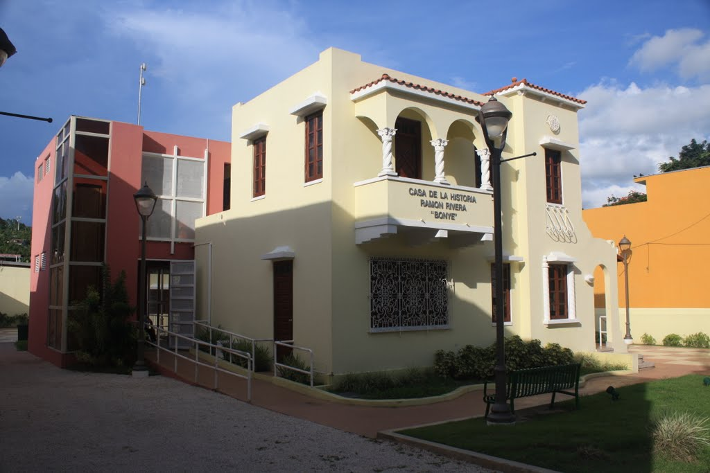

La Soplaera Waterfall
El Charco La Soplaera es una de las charcas más accesibles que tiene Puerto Rico. Al llegar al área solo debes caminar unos diez minutos aproximadamente del estacionamiento hasta la charca. El inicio del camino tiene una vereda donde se camina cómodamente y se puede apreciar de lejos la parte de arriba de la cascada. Ya luego de esa vereda se camina por un área rocosa, aquí deben tener un poco de precaución ya que algunas rocas pueden resbalar. Al pasar el área rocosa llegas a la charca. Es una charca de aguas cristalinas que reflejan azul turquesa.
- Dirección: 37W7+986, Sec Pandura, Peñuelas 00624
Salto Peñuelas
Está localizado en el Barrio Jaguas a más de 100 metros sobre el nivel del mar. Este charco recoge las aguas que resbalan bajo un peñón, las cuales posteriormente se convierten en un salto de agua de aproximadamente 40 pies de altura.
Pueden visitar en:
- Dirección: 37J6+8MG, Santo Domingo, Peñuelas 00624
La Negra Cocola Railroad
La Locomotora número 2, conocida como ''La Negra Cocola'' fue traída a Peñuelas por la familia Valdivieso. Fue ordenada, igual que la número 1, a través de La South Porto Rico Sugar Co [SPRSCO] en La Central Gúanica. Era el año 1924, y Peñuelas necesitaba con urgencia una máquina potente que facilitara las labores agrícolas del cañaveral.Esta máquina , creada por The Baldwin Locomotive Works of Fhiladelphia,USA,con un peso de 18 toneladas y unas ruedas de 33 pulgadas de diámetro era impulsada con carbón de piedra y se utilizaba para transportar la caña desde el puente de ''La Pepita'' donde se encontraba la estación del Ferrocarril, hasta Tallaboa. De este lugar se llevaba a la Central Mercedita de Ponce.
Pueden visitar en:
- Dirección: 375G+2WC, Penuelas, Peñuelas 00624
Casa de la Historia Ramón Rivera "Bonyé"
Museo que transporta al visitante en el tiempo, desde su comienzo en la historia del pueblo hace más de 400 años, en el cual los primeros visitantes y pobladores provenientes de las costas de Venezuela dejaron su legado arqueológico.
Pueden visitar en: